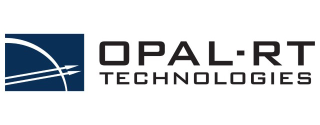

OPAL-RT RT-LAB Asynchronous Process (AsyncIP) 
OPAL-RT RT-LAB Example Project
VILLASnode can interface with OPAL-RT targets using Asynchronous Process blocks. OPAL-RT's RT-Lab ships with a minimal example to demonstrate the usage of AysncIP blocks.
This example uses a fairly simply packet format which is supported by VILLASnode using the opal.asyncip format.
You can start right away using this example project provided by OPAL-RT when this format is used like in this example configuration for VILLASnode:
# SPDX-FileCopyrightText: 2014-2023 Institute for Automation of Complex Power Systems, RWTH Aachen University
# SPDX-License-Identifier: Apache-2.0
nodes = {
node = {
type = "socket"
layer = "udp"
format = {
type = "opal.asyncip"
dev_id = 99
}
in = {
# Port number specified in Asynchronous Process block of RTlab project
address = ":12000"
signals = {
count = 64
# The Asynchronous Process block only supports floating point values!
type = "float"
}
}
out = {
# IP address and port of OPAL-RT Target
address = "192.168.0.44:12000"
}
}
}
Custom VILLASnode-specific RT-LAB Project
Alternatively, we also provide a custom RT-LAB project as an example which uses the villas.binary format.
It is a customization of the original AysncIP code from OPAL-RT.
This approach has the advantage that the payload format is carrying more metadata such as timestamps which can useful for collecting statistics or synchronizing systems.
Source code: https://github.com/VILLASframework/node/tree/master/clients/opal
Add AsyncIP to the existing project
Follow the steps below to add AsyncIP to the existing OPAL-RT project:
Step 1
Copy the following files to the models folder of the RT-LAB project:
- Folder:
include/ - Folder:
src/ - File:
Makefile.mk
Step 2
The .llm file should contain the following lines:
[ExtraPutFilesComp]
include\config.h=Ascii
include\msg.h=Ascii
include\msg_format.h=Ascii
include\socket.h=Ascii
include\utils.h=Ascii
Makefile.mk=Ascii
src\msg.c=Ascii
src\main.c=Ascii
src\socket.c=Ascii
src\utils.c=Ascii
src\compat.c=Ascii
Step 3
In RT-LAB under Files tab, we should see the files listed above for .llm file
Step 4
In RT-LAB model settings: Development tab -> Compiler -> Compiler Command (makefile) add the following command
/usr/bin/make -f /usr/opalrt/common/bin/opalmodelmk
Step 5
Maximum number of values in UDP packets:
There is a #define inside the implementation which must be changed accordingly.
The #define is in file: model_directory/include/config.h There you will find a directive called MAX_VALUES.
It is recommended to keep this value below 300 to ensure that all values are transferred within a single UDP packet.
Troubleshooting
AsyncIP executable still running on target
After the simulation stop AsyncIP may still stay alive after the simulation stop. You have to stop it manually because the next simulation start will not be able to start AsyncIP.
Kill running AsyncIP on OPAL:
- Start Putty.
- Connect to OPAL-RT target by using the existing profiles.
- Kill all running processes with name 'AsyncIP' by running
$ killall AsyncIP. - Logout from the OPAL-RT target by running
$ exit.
See also:
Problem occurs when there are multiple subsystems (SM_, SS_, ...)
Even there is no OpAsyncIPCtrl in every subsystem, RT-Lab wants to build a AsyncIP executable during building process, if there is no OpAsyncIPCtrl it shows error.
Workaround for now: place fake OpAsyncIPCtrl in each subsystem.
Additional problem: After Load, only AsyncIP in master subsystem (sm_) is started.
Actually: this helps that you do not need fake blocks:
.llm file should contain the following:
[ExtraPutFilesComp]
C:\OPAL-RT\RT-LAB\v10.7.7.506\common\lib\redhawk\libOpalAsyncApiCore.a=Binary
Note: The path of libOpalAsyncApiCore.a depends on your version of RT-LAB.
but it seems that still you can you it only in SM_...
See also: OPAL-RT KB Article AA-00491